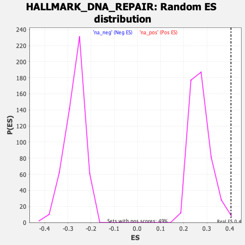

Profile of the Running ES Score & Positions of GeneSet Members on the Rank Ordered List
| Dataset | qlf.KOd4vsWTd4_gsea_score |
| Phenotype | NoPhenotypeAvailable |
| Upregulated in class | na_pos |
| GeneSet | HALLMARK_DNA_REPAIR |
| Enrichment Score (ES) | 0.40406084 |
| Normalized Enrichment Score (NES) | 1.4873892 |
| Nominal p-value | 0.006085193 |
| FDR q-value | 0.017832639 |
| FWER p-Value | 0.228 |
| SYMBOL | RANK IN GENE LIST | RANK METRIC SCORE | RUNNING ES | CORE ENRICHMENT | |
|---|---|---|---|---|---|
| 1 | POLR2H | 169 | 4.124 | 0.0134 | Yes |
| 2 | POLR1C | 175 | 4.084 | 0.0424 | Yes |
| 3 | POLR2E | 182 | 4.038 | 0.0709 | Yes |
| 4 | NME1 | 281 | 3.482 | 0.0866 | Yes |
| 5 | UMPS | 285 | 3.468 | 0.1113 | Yes |
| 6 | SRSF6 | 296 | 3.436 | 0.1351 | Yes |
| 7 | IMPDH2 | 381 | 3.144 | 0.1497 | Yes |
| 8 | NCBP2 | 394 | 3.093 | 0.1708 | Yes |
| 9 | POLR2F | 444 | 2.949 | 0.1873 | Yes |
| 10 | BCAM | 486 | 2.863 | 0.2040 | Yes |
| 11 | SAC3D1 | 596 | 2.625 | 0.2124 | Yes |
| 12 | GTF2H1 | 663 | 2.486 | 0.2240 | Yes |
| 13 | POLR2D | 720 | 2.372 | 0.2357 | Yes |
| 14 | GUK1 | 766 | 2.301 | 0.2479 | Yes |
| 15 | MRPL40 | 768 | 2.296 | 0.2644 | Yes |
| 16 | BOLA2 | 994 | 1.999 | 0.2571 | Yes |
| 17 | DUT | 1009 | 1.973 | 0.2700 | Yes |
| 18 | APRT | 1032 | 1.939 | 0.2818 | Yes |
| 19 | SF3A3 | 1118 | 1.817 | 0.2867 | Yes |
| 20 | POLR2J | 1276 | 1.653 | 0.2835 | Yes |
| 21 | COX17 | 1296 | 1.630 | 0.2934 | Yes |
| 22 | POLR2K | 1328 | 1.601 | 0.3020 | Yes |
| 23 | POLE4 | 1336 | 1.592 | 0.3128 | Yes |
| 24 | RPA3 | 1395 | 1.547 | 0.3183 | Yes |
| 25 | POLR1D | 1500 | 1.454 | 0.3188 | Yes |
| 26 | TAF9 | 1516 | 1.442 | 0.3278 | Yes |
| 27 | GTF2H3 | 1532 | 1.426 | 0.3366 | Yes |
| 28 | POLD3 | 1556 | 1.404 | 0.3445 | Yes |
| 29 | TARBP2 | 1609 | 1.367 | 0.3493 | Yes |
| 30 | ADA | 1744 | 1.268 | 0.3456 | Yes |
| 31 | EDF1 | 1775 | 1.246 | 0.3517 | Yes |
| 32 | ZWINT | 1846 | 1.186 | 0.3535 | Yes |
| 33 | AAAS | 1878 | 1.168 | 0.3589 | Yes |
| 34 | PCNA | 1898 | 1.155 | 0.3654 | Yes |
| 35 | RAE1 | 1991 | 1.087 | 0.3644 | Yes |
| 36 | ALYREF | 2003 | 1.077 | 0.3711 | Yes |
| 37 | DGCR8 | 2046 | 1.045 | 0.3745 | Yes |
| 38 | RFC3 | 2146 | 0.986 | 0.3721 | Yes |
| 39 | NFX1 | 2170 | 0.974 | 0.3769 | Yes |
| 40 | SSRP1 | 2219 | 0.946 | 0.3791 | Yes |
| 41 | RPA2 | 2252 | 0.925 | 0.3827 | Yes |
| 42 | POLR2C | 2342 | 0.876 | 0.3804 | Yes |
| 43 | RBX1 | 2381 | 0.860 | 0.3830 | Yes |
| 44 | GTF2B | 2420 | 0.843 | 0.3854 | Yes |
| 45 | DDB1 | 2422 | 0.843 | 0.3913 | Yes |
| 46 | RFC5 | 2539 | 0.784 | 0.3858 | Yes |
| 47 | ERCC2 | 2596 | 0.759 | 0.3859 | Yes |
| 48 | ADRM1 | 2607 | 0.755 | 0.3904 | Yes |
| 49 | SNAPC4 | 2655 | 0.737 | 0.3911 | Yes |
| 50 | POM121 | 2767 | 0.687 | 0.3854 | Yes |
| 51 | GTF2A2 | 2779 | 0.681 | 0.3893 | Yes |
| 52 | ERCC8 | 2786 | 0.678 | 0.3936 | Yes |
| 53 | POLA2 | 2790 | 0.677 | 0.3982 | Yes |
| 54 | TAF13 | 2804 | 0.670 | 0.4017 | Yes |
| 55 | SEC61A1 | 2830 | 0.658 | 0.4041 | Yes |
| 56 | POLR2I | 2932 | 0.618 | 0.3988 | No |
| 57 | POLD1 | 2999 | 0.597 | 0.3967 | No |
| 58 | TYMS | 3053 | 0.578 | 0.3958 | No |
| 59 | POLB | 3088 | 0.564 | 0.3966 | No |
| 60 | AK3 | 3168 | 0.537 | 0.3928 | No |
| 61 | GTF2H5 | 3184 | 0.531 | 0.3952 | No |
| 62 | RFC2 | 3224 | 0.518 | 0.3952 | No |
| 63 | NUDT9 | 3281 | 0.497 | 0.3934 | No |
| 64 | GTF3C5 | 3368 | 0.470 | 0.3885 | No |
| 65 | NME3 | 3399 | 0.461 | 0.3889 | No |
| 66 | SURF1 | 3421 | 0.455 | 0.3902 | No |
| 67 | CSTF3 | 3455 | 0.444 | 0.3902 | No |
| 68 | NUDT21 | 3484 | 0.435 | 0.3906 | No |
| 69 | POLR2G | 3580 | 0.404 | 0.3844 | No |
| 70 | TAF12 | 3638 | 0.386 | 0.3816 | No |
| 71 | PRIM1 | 3646 | 0.384 | 0.3837 | No |
| 72 | GTF2F1 | 3663 | 0.378 | 0.3849 | No |
| 73 | FEN1 | 3804 | 0.341 | 0.3739 | No |
| 74 | TMED2 | 3817 | 0.338 | 0.3752 | No |
| 75 | RAD51 | 3999 | 0.289 | 0.3598 | No |
| 76 | UPF3B | 4002 | 0.288 | 0.3617 | No |
| 77 | POLH | 4054 | 0.274 | 0.3588 | No |
| 78 | BRF2 | 4100 | 0.263 | 0.3563 | No |
| 79 | RFC4 | 4233 | 0.231 | 0.3453 | No |
| 80 | POLR2A | 4251 | 0.226 | 0.3453 | No |
| 81 | LIG1 | 4346 | 0.208 | 0.3377 | No |
| 82 | MPG | 4472 | 0.176 | 0.3269 | No |
| 83 | POLA1 | 4526 | 0.162 | 0.3230 | No |
| 84 | GMPR2 | 4608 | 0.143 | 0.3162 | No |
| 85 | CANT1 | 5023 | 0.066 | 0.2768 | No |
| 86 | PNP | 5063 | 0.059 | 0.2734 | No |
| 87 | ERCC4 | 5087 | 0.054 | 0.2716 | No |
| 88 | MPC2 | 5125 | 0.047 | 0.2684 | No |
| 89 | STX3 | 5204 | 0.034 | 0.2611 | No |
| 90 | DAD1 | 5326 | 0.015 | 0.2495 | No |
| 91 | RNMT | 5328 | 0.014 | 0.2496 | No |
| 92 | TAF6 | 5398 | -0.000 | 0.2429 | No |
| 93 | NELFE | 5503 | -0.016 | 0.2330 | No |
| 94 | EIF1B | 5555 | -0.023 | 0.2282 | No |
| 95 | ITPA | 5610 | -0.034 | 0.2233 | No |
| 96 | TSG101 | 5622 | -0.035 | 0.2225 | No |
| 97 | CETN2 | 5673 | -0.042 | 0.2180 | No |
| 98 | DGUOK | 6047 | -0.105 | 0.1828 | No |
| 99 | BCAP31 | 6048 | -0.106 | 0.1835 | No |
| 100 | TAF10 | 6089 | -0.113 | 0.1805 | No |
| 101 | ERCC3 | 6122 | -0.119 | 0.1783 | No |
| 102 | CLP1 | 6133 | -0.121 | 0.1782 | No |
| 103 | REV3L | 6155 | -0.125 | 0.1770 | No |
| 104 | NELFCD | 6214 | -0.137 | 0.1724 | No |
| 105 | XPC | 6247 | -0.145 | 0.1704 | No |
| 106 | NT5C | 6367 | -0.170 | 0.1602 | No |
| 107 | SMAD5 | 6404 | -0.180 | 0.1580 | No |
| 108 | RALA | 6484 | -0.196 | 0.1518 | No |
| 109 | SNAPC5 | 6513 | -0.203 | 0.1505 | No |
| 110 | RAD52 | 6579 | -0.220 | 0.1459 | No |
| 111 | ELL | 7315 | -0.422 | 0.0781 | No |
| 112 | DCTN4 | 7409 | -0.457 | 0.0724 | No |
| 113 | GPX4 | 7423 | -0.460 | 0.0745 | No |
| 114 | ERCC1 | 7676 | -0.563 | 0.0542 | No |
| 115 | TAF1C | 7741 | -0.589 | 0.0523 | No |
| 116 | NELFB | 7792 | -0.608 | 0.0519 | No |
| 117 | RRM2B | 7842 | -0.629 | 0.0517 | No |
| 118 | POLL | 7850 | -0.631 | 0.0555 | No |
| 119 | HCLS1 | 8200 | -0.788 | 0.0276 | No |
| 120 | DDB2 | 8240 | -0.812 | 0.0297 | No |
| 121 | USP11 | 8273 | -0.829 | 0.0326 | No |
| 122 | ERCC5 | 8297 | -0.837 | 0.0364 | No |
| 123 | NME4 | 8382 | -0.895 | 0.0348 | No |
| 124 | ARL6IP1 | 8538 | -0.991 | 0.0270 | No |
| 125 | VPS37B | 8651 | -1.061 | 0.0238 | No |
| 126 | POLR3C | 8697 | -1.086 | 0.0273 | No |
| 127 | POLR3GL | 9114 | -1.425 | -0.0025 | No |
| 128 | TK2 | 9243 | -1.566 | -0.0036 | No |
| 129 | POLD4 | 9372 | -1.697 | -0.0037 | No |
| 130 | VPS28 | 9597 | -2.032 | -0.0106 | No |
| 131 | SDCBP | 9924 | -2.699 | -0.0226 | No |
| 132 | PDE4B | 10029 | -2.981 | -0.0111 | No |
| 133 | ADCY6 | 10076 | -3.179 | 0.0073 | No |
| 134 | CMPK2 | 10358 | -4.744 | 0.0145 | No |
